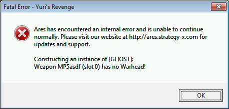
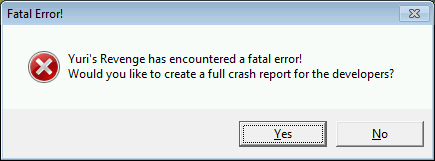
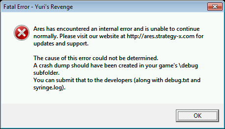

Internal Errors / Debugging¶
When an Internal Error occurs, the except.txt file that is produced has
been modified so as to output more information that is both relevant to mod
authors, and also relevant to us, the developers, when debugging the changes and
additions introduced by Ares.
except.txt may include a timestamp in the filename to prevent an
existing except.txt file being overwritten.
Ares will give you the option to produce a crash dump file to assist in
determining the cause of the error. This file will be stored in a Debug folder
within the main game directory. Note that the crash dump file is very large and
may only be readable by the Ares developers. Like except.txt,
this file will include a timestamp in the filename.
If you have turned on debug logging (see Command Line Arguments and Debug Logging)
then the game will produce a debug.log file in the aforementioned Debug
folder. Like except.txt, this file will include a timestamp in the
filename. The log file may contain useful information for helping diagnose
problems with your mod or Ares itself.
In the event of an Internal Error, Ares can sometimes tell you what caused the error. For example:
Here, Ares can determine what caused the error.
Here, the error cannot be figured out - Ares offers to create a full crash report.
The crash report has been generated. Ares will close after showing this message.
Some potential errors may now be triggered when loading rather than waiting for the error to crop up in game. Critical errors occur always, less critical errors occur only if you have used the -STRICT command line argument.
New in version 0.1.